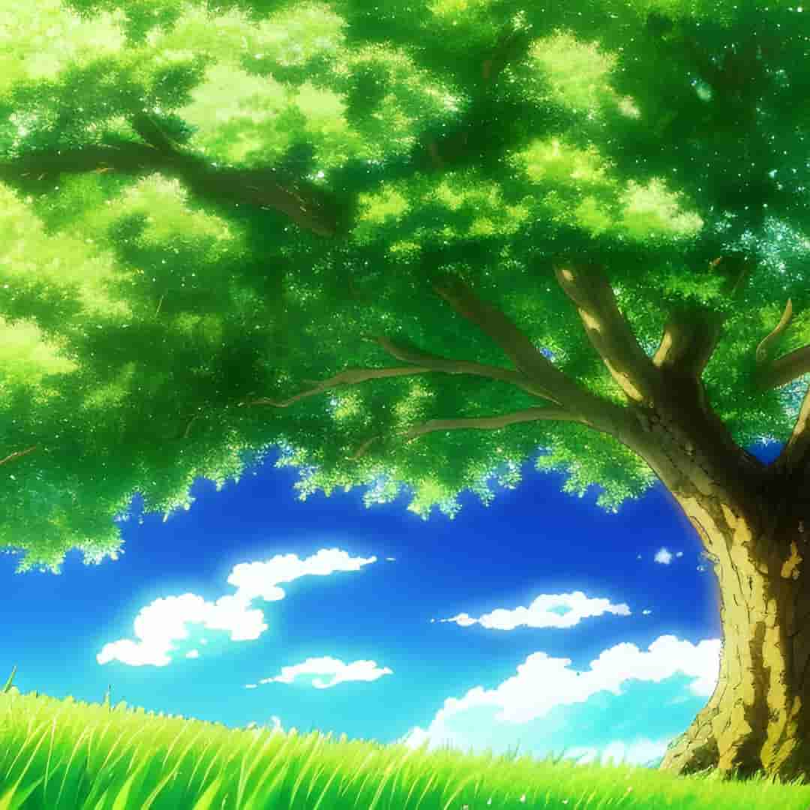

Top 10 Best Soundtracks From Popular Anime Series
Anime has always been known for its breathtaking animation, unique storylines, and captivating characters. But one aspect of anime that often goes overlooked is the music. Anime soundtracks have become an integral part of the viewing experience, and they often set the tone for the series. In this article, we'll be taking a look at the top 10 best anime soundtracks of all time, including some of the most popular animes such as Bleach, Hunter x Hunter, and One Piece.
Table of Contents
- Cowboy Bebop: A Classic Soundtrack
- Samurai Champloo: The Perfect Blend of Hip-Hop and Japanese Music
- Neon Genesis Evangelion: A Hauntingly Beautiful Soundtrack
- Bleach: A Mix of Rock, Electronic, and Orchestral Pieces
- Attack on Titan: Epic Orchestral and Rock Pieces
- One Piece: A Mix of Upbeat J-Pop and Epic Orchestral Pieces
- Naruto: Epic Orchestral and Rock Pieces
- Hunter x Hunter: A Mix of Upbeat and Emotional Tracks
- Fullmetal Alchemist: Brotherhood - A Beautiful and Emotional Soundtrack
- Your Lie in April - A Breathtaking and Emotional Soundtrack
- Conclusion
1. Cowboy Bebop: A Classic Soundtrack
Going back to the late '90s, Cowboy Bebop stands as an iconic anime with an extraordinary soundtrack composed by the talented Yoko Kanno. This fusion of jazz, blues, and rock beautifully captures the essence of the series, becoming a classic in its own right. The opening theme, "Tank!", remains an instantly recognizable anthem that sets the tone for the entire show
2. Samurai Champloo: The Perfect Blend of Hip-Hop and Japanese Music
From on a genre-bending adventure, Samurai Champloo delights us with a remarkable soundtrack that seamlessly merges hip-hop beats with traditional Japanese music. Crafted by Nujabes and Fat Jon, the music effortlessly embodies the show's cultural fusion. The opening theme, "Battlecry" by Nujabes, stands as a timeless anthem that encapsulates the spirit of the series.
3. Neon Genesis Evangelion: A Hauntingly Beautiful Soundtrack
Neon Genesis Evangelion, an anime that left an indelible mark, boasts a hauntingly beautiful soundtrack composed by Shiro Sagisu. Through a delicate blend of orchestral and choral arrangements, the music envelops the series with drama and tension, creating an unforgettable auditory experience. The opening theme, "A Cruel Angel's Thesis" by Yoko Takahashi, echoes as one of the most recognizable and evocative anime themes ever composed.

4. Bleach: A Mix of Rock, Electronic, and Orchestral Pieces
Shiro Sagisu weaves a sonic tapestry in the Bleach soundtrack, skillfully blending rock, electronic, and orchestral elements to encapsulate the series' spirit. The opening theme, "Asterisk" by Orange Range, instantly captivates with its catchy allure, while instrumental pieces like "Number One" and "Soundscape to Ardor" mesmerize with their ethereal beauty. The Bleach soundtrack is a treasure trove for anime music aficionados.
5. Attack on Titan: Epic Orchestral and Rock Pieces
Hiroyuki Sawano takes us on an epic journey through the Attack on Titan soundtrack, employing a masterful fusion of orchestral arrangements and rock influences. The opening theme, "Guren no Yumiya" by Linked Horizon, stands as an anthem that resonates deeply within the hearts of fans, while instrumental tracks like "Bauklötze" and "Eren's Berserk Theme" intensify the series' most climactic moments. The Attack on Titan soundtrack is a testament to the power of music in storytelling.
6. One Piece: A Mix of Upbeat J-Pop and Epic Orchestral Pieces
Kohei Tanaka's work in the One Piece soundtrack is a vibrant symphony, blending upbeat J-Pop tracks and majestic orchestral pieces that encapsulate the essence of the series. The opening theme, "We Are!" by Hiroshi Kitadani, becomes an anthem that lingers in our hearts, while instrumental compositions like "Overtaken" and "Luffy's Fierce Attack" stand as iconic soundscapes of the anime. The One Piece soundtrack is a treasure trove for those seeking adventure through music.
7. Naruto: Epic Orchestral and Rock Pieces
Toshio Masuda and Yasuharu Takanashi masterfully craft the Naruto soundtrack, skillfully merging epic orchestral pieces with energetic rock tracks that embody the spirit of the series. The opening theme, "Rocks" by Hound Dog, pulsates with the energy that defines Naruto, while instrumental tracks like "Sadness and Sorrow" and "Strong and Strike" resonate with raw emotion, leaving a lasting impact on listeners. The Naruto soundtrack stands as a testament to the power of music in capturing the essence of a tale.
8. Hunter x Hunter: A Mix of Upbeat and Emotional Tracks
Yoshihisa Hirano paints an auditory masterpiece in the Hunter x Hunter soundtrack, seamlessly blending lively compositions with emotionally stirring melodies that reflect the essence of the series. The opening theme, "Departure!" by Masatoshi Ono, ignites a sense of adventure within us, while instrumental tracks like "Legend of the Martial Artist" and "Requiem Aranea" evoke a range of emotions, creating a captivating sonic journey.
9. Fullmetal Alchemist: Brotherhood - A Beautiful and Emotional Soundtrack
Akira Senju weaves a tapestry of beauty and emotion in the Fullmetal Alchemist: Brotherhood soundtrack. The mix of exquisite compositions captures the spirit of the series, with the opening theme, "Again" by Yui, serving as a heartfelt anthem of hope. Instrumental pieces like "Trisha's Lullaby" and "Brothers" tug at our heartstrings, leaving an indelible mark on our souls. The Fullmetal Alchemist: Brotherhood soundtrack is a testament to the profound emotional impact music can have.
10. Your Lie in April - A Breathtaking and Emotional Soundtrack
Masaru Yokoyama's composition in Your Lie in April soundtrack enchants listeners with its ethereal beauty and emotional depth. The opening theme, "Hikaru Nara" by Goose House, resonates as a captivating melody that encapsulates the sense of wonder in the series. Instrumental pieces like "Watashi no Uso" and "Yuujin A-kun wo Watashi no Bansousha ni Ninmeishimasu" stir emotions within, making the soundtrack an emotional journey through music.
Conclusion
In conclusion, anime soundtracks possess the power to transcend boundaries and connect with our souls. The top 10 soundtracks highlighted in this article stand as remarkable achievements, weaving melodies that capture the essence of their respective series. Whether you're a fervent anime enthusiast or simply appreciate the magic of music, these soundtracks are a symphony of artistry that should not be missed. Immerse yourself in the enchanting melodies and let them transport you to extraordinary worlds.